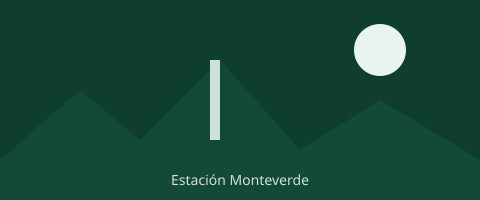
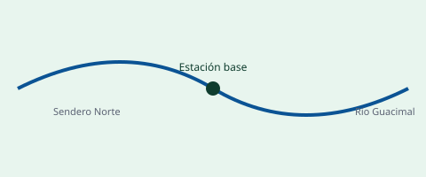

Monitoreo de anfibios
Equipo Biología · Sendero Norte · –
En progresoEstación Biológica Monteverde · Día 4 de 7 · Operaciones activas


Equipo Biología · Sendero Norte · –
En progresoEquipo Hidrología · Río Guacimal · –
PendienteEquipo Meteorología · Torre 2 · –
CompletadaEquipo Geología · Ladera este · –
SuspendidaEquipo Biología · Sendero Sur · –
Pendiente4 investigadores: Rojas, Vindas, Mora, Chaves
Misión actual: Monitoreo de anfibios
En progresoPróxima actividad: 14:00 · Revisión de trampas de cámara
3 investigadores: Solano, Araya, Jiménez
Misión actual: Medición de caudal
PendientePróxima actividad: 17:30 · Descarga de datos de sensores
2 investigadores: Fernández, Castro
Misión actual: Calibración de estación meteorológica
CompletadaPróxima actividad: 13:00 · Calibración adicional
3 investigadores: Salas, Ureña, Brenes
Misión actual: Muestreo de suelos
SuspendidaPróxima actividad: 16:00 · Muestreo en ladera este
Prioridad crítica · Sendero Norte, riesgo de crecida súbita
Prioridad informativa · Sensor de cámara trampa, sendero sur